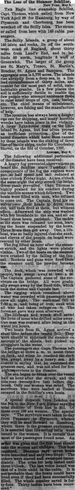

HN HN-231 · May 14, 1875 · Transportation & Maritime > Shipwrecks, Maritime Accidents & Losses > Groundings
Source: Jasper Republican, p. 2, local summary of the first reports — original page; Royal Museums Greenwich wreck record.
Report: The passenger liner Schiller, sailing from New York toward Hamburg, struck rocks in fog on May 7. The Indiana newspaper relayed a very low preliminary survivor count and mistakenly placed the Isles of Scilly off southeastern England. The Royal Museums Greenwich record confirms the wreck was at the Western Rocks, Isles of Scilly, off southwestern Britain.
Assessment: An authentic disaster report with a checkable geographic error. Initial survivor and casualty totals should not be taken as final. Location independently corrected.
Authentic images retrieved from Hoosier State Chronicles (Indiana State Library). Article crops are located using the archive's own OCR word coordinates and rendered at native crop resolution; article clips are assembled from the archive's own article-block images; page images marked "archive tiles" are stitched from the archive's own tiled page service at its 256-px tile cap; page images marked "issue PDF" are single pages rasterised from the archive's own issue PDF, with the page chosen by matching the headline against the PDF's text layer; page scans are reduced-size access renditions. No images were generated, mocked, or retouched.

Not yet acquired. Queued for provider-specific acquisition testing (see source-acquisition manifest).
URL (preserved verbatim): https://newspapers.library.in.gov/?a=d&d=JPRP18750514.2.12
Saved research report: Historical_Newspaper_Event_Research_228-252_2026-10-22.md
Evidence note: A newspaper report means a historical publication made a claim; it does not establish that claim as fact. Contemporary reporting is separated from later scholarly context and our own assessment.